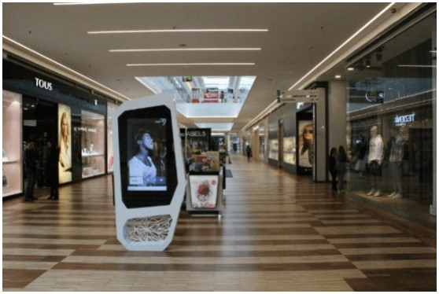

Malls & Outdoor DOOH Services
With digitization and technological evolution, there has been a sharp growth in DOOH (Digital-Out-of-Home, which
refers to advertising used for commercial purposes, usually located in public places, which may involve screens
and other digital and interactive tools).
DOOH is ideal when brands want to reverse an impacting campaign in a short time or when they want to respond to
breaking news. The possibility of spreading messages in real time is one of the main advantages of DOOH
communication. With the introduction of new technologies, the use of digital billboards in different places
became even more interesting. And so, DOOH communication emerged.
Reaching specific market segments, enjoying the benefits of technology, marketing to a large number of people in
a dynamic, flexible way and without contributing to visual pollution are some of the characteristics of DOOH
campaigns.

This way, and due to the real-time nature of a DOOH campaign which we create, ads can be quickly adjusted in
response to events, which saves time and money.